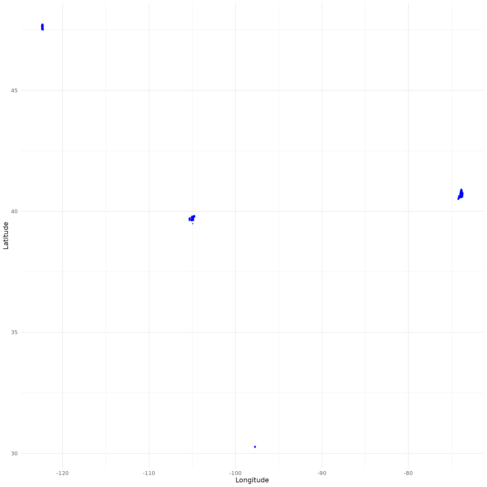
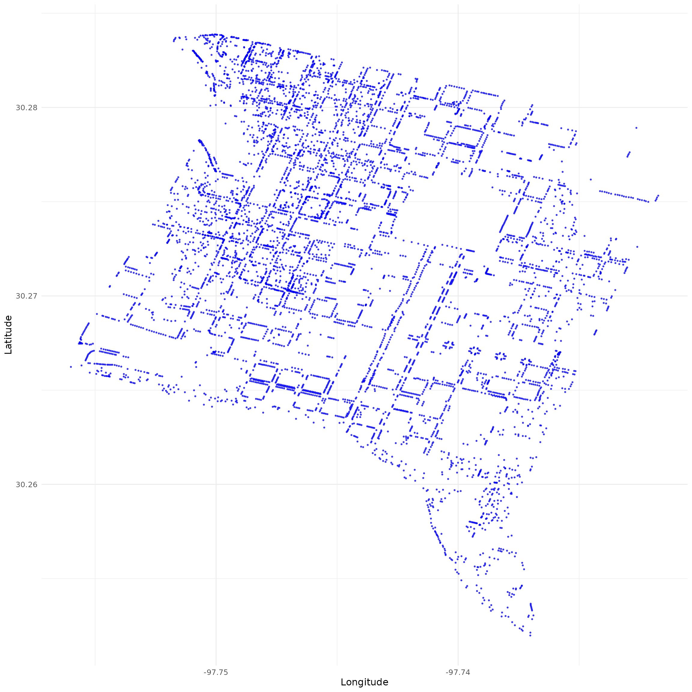
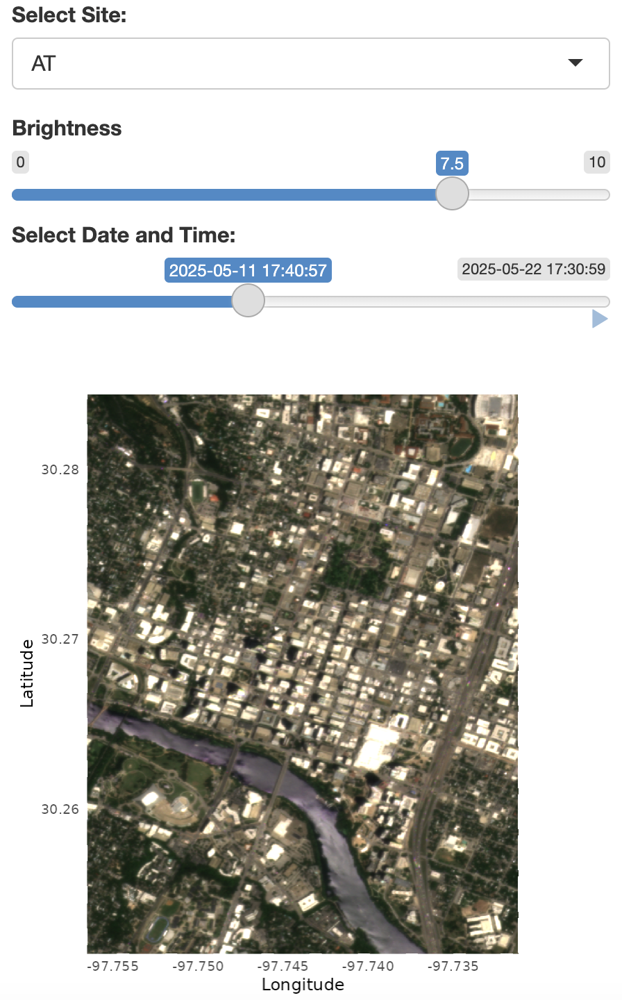
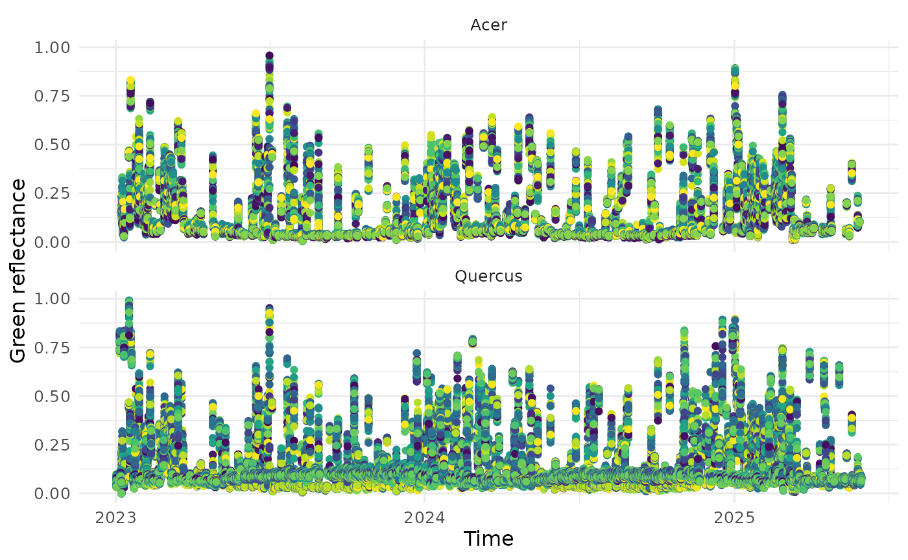
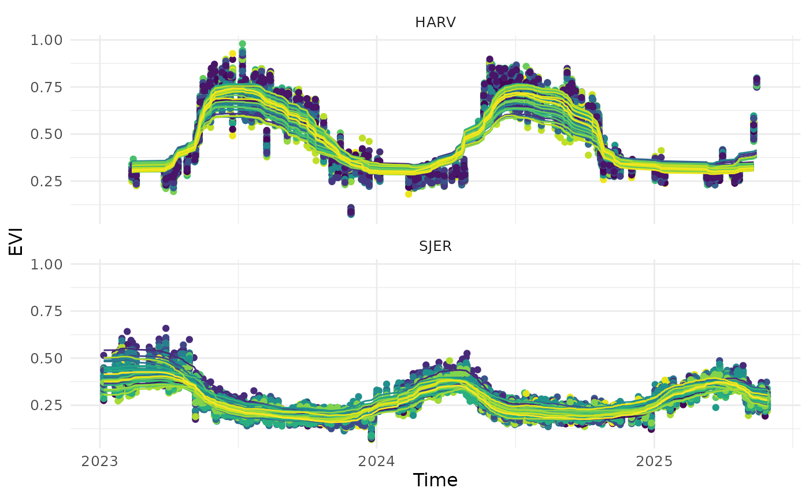
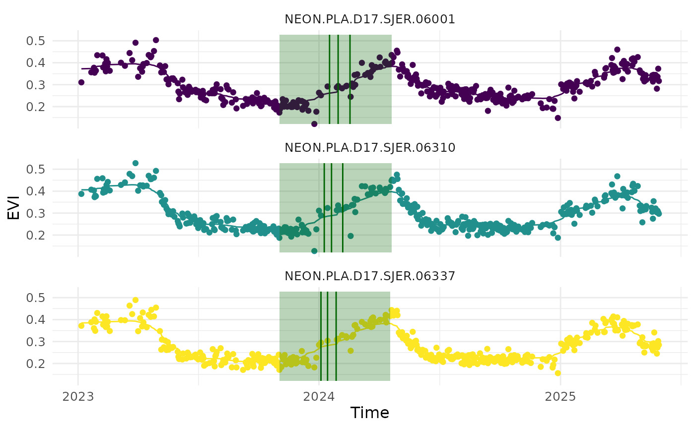

Overview
This workflow demonstrates the features of the BatchPlanet package. It provides a step-by-step guide to downloading PlanetScope imagery, processing time series data, and calculating start/end of season metrics. The package is designed to work with the PlanetScope API and is particularly useful for researchers and practitioners in environmental studies and remote sensing. This package has been used for our peer-reviewed publication (Song et al., 2025), to predict reproductive phenology of wind-pollinated trees via PlanetScope time series.
Who should use this package? - If you prefer using R over Python for batch downloading PlanetScope data across multiple locations and extended time periods, as well as for processing tasks such as time series retrieval and metric calculation. - If you want to utilize high-performance computing to run processes in parallel. - If reproducibility and control over data are your top priorities.
1 Read coordinate data
In order to download PlanetScope imagery, you need to provide coordinates of points of interest. For this example, we will use several street tree inventories retrieved from the OpenTrees.org.
# Read the data file with coordinates
df_coordinates_urban <- readr::read_csv(system.file("extdata", "urban", "example_urban_coordinates.csv", package = "BatchPlanet"), show_col_types = FALSE)
head(df_coordinates_urban)## # A tibble: 6 × 5
## site id lon lat group
## <chr> <dbl> <dbl> <dbl> <chr>
## 1 NY 180683 -73.8 40.7 Acer
## 2 NY 200540 -73.8 40.8 Quercus
## 3 NY 204026 -73.9 40.7 Gleditsia
## 4 NY 204337 -73.9 40.7 Gleditsia
## 5 NY 189565 -74.0 40.7 Tilia
## 6 NY 190422 -74.0 40.8 GleditsiaYou should create your own data frame with coordinates. Make sure
your data frame for coordinates have the columns: id
(unique id for each point of interest), lon for longitude,
and lat for latitude. You may have a character column
site if you have clustered coordinates at dispersed sites.
You may also a character column group you can use to group
coordinates later on.
What do we mean by “clustered coordinates at dispersed sites?” Use
the function visualize_coordinates() to visualize the
coordinates. Our sample coordinates are dispersed across four cities.
Within each city, there are hundreds or thousands of coordinates,
representing individual trees.
visualize_coordinates(
df_coordinates_urban |>
dplyr::group_by(site) |>
dplyr::slice(sample(1:dplyr::n(), size = min(dplyr::n(), 2000))) |>
dplyr::ungroup()
) # Multiple sites across continental US
visualize_coordinates(df_coordinates_urban |> dplyr::filter(site == "AT")) # Zoom in to one site Austin
Why is it important to label the coordinates with sites? If we treat all coordinates as a single set and try to download PlanetScope imagery that cover them, we will end up with a tremendous amount of imagery that cover most of continental US. Instead, we will use the site labels to group the coordinates and create bounding boxes that cover each site. This way, we can download imagery that only cover the sites of interest. If your coordinates are already clustered in a small area, you don’t have to supply the site labels. The package will process all coordinates as a single site.
2 Download PS data
You will need an active Planet account and an API key to access the PlanetScope API. You can sign up for an account on the Planet website. Once you have an account, you can copy your API key from your account settings.
2.1 Set downloading parameters
You will specify several key parameters for downloading PlanetScope
imagery using the set_planetscope_parameters() function.
These parameters include the API key, item name, asset type, product
bundle, cloud cover limit, and whether to use harmonized data. Within
this step, you set your API key using the set_api_key()
function. This function will save your API key in a hidden environment
file in your working directory, so you don’t have to enter it every time
you run the code. If you would like to change your API key, you can use
the same function with the argument change_key = T.
In the Data API, an item is an entry in our catalog, and generally represents a single logical observation (or scene) captured by a satellite. Items have assets, which are the downloadable products derived from the item’s source data. PlanetScope documentation
Product bundles comprise of a group of assets for an item. PlanetScope documentation
Our default item is PSScene, 8-band PlanetScope imagery.
The default asset is ortho_analytic_4b_sr, which is a
PlanetScope atmospherically corrected surface reflectance product with
four bands (blue, green, red, near-infrared). The default product bundle
is analytic_sr_udm2, which includes the surface reflectance
data and the Usable
data mask 2 (UDM2). You can change these parameters to suit your
needs. See a full list of PlanetScope items and assets in the PlanetScope data catalog and
see information and product bundles here.
PlanetScope API allows filtering imagery by several criteria. Here,
we allow users to filter imagery below a certain cloud coverage (the
ratio of the area covered by clouds to total area). The
cloud_lim parameter is set to 1 by default, which means we
will download all images regardless of cloud coverage. You can set this
parameter to a lower value (e.g., 0.5) to filter out images with more
than 50% cloud coverage.
PlanetScope API allow users to apply a tool named “harmonize” that
applies scene-level normalization and harmonization, such that all
PlanetScope data were consistent and approximately comparable to data
from Sentinel 2. This tool is useful when integrating or comparing
images from different times and locations. Refer to PlanetScope
technical documentation for more details. The
harmonized parameter is set to TRUE by
default, which means we will download harmonized data. You can set this
parameter to FALSE to download non-harmonized data.
setting <- set_planetscope_parameters(
api_key = set_api_key(),
item_name = "PSScene",
asset = "ortho_analytic_4b_sr",
product_bundle = "analytic_sr_udm2",
cloud_lim = 1,
harmonized = T
)Use the download_sample_data() function to download the
sample data we will use in this vignette. For demonstration purpose, we
are going to set the data directory to a subfolder of the
sample-data folder.
You should specify your own directory to store the downloaded data and later store processed data. It is recommended to use symbolic link to a directory on your HPC system. This way, you can easily access the data from your local machine without being limited by the storage space on your local machine. Please still closely monitor the storage space on your local machine or HPC system as the data can be large. For example, all images for New York City since 2017 can be over 1TB.
## Directory 'sample-data' already exists. Skipping download.
dir_data <- "sample-data"
dir_data_urban <- file.path(dir_data, "urban")2.2 Order
Use the order_planetscope_imagery_batch() function to
order PlanetScope imagery over multiple sites and years. This function
first searches for all the images that meets the criteria you specified,
and then orders the images.
You can specify the sites (must exist in your site
column of the coordinates data frame) and years (after 2014) you want to
order images for. Here, we order images from two sites in one year as an
example. If you do not specify v_site and
v_year, the function will order images for all sites and
years in the coordinates data frame.
The function will create a folder raw/ in the data
directory you specified, and multiple subfolders for different sites you
specified. In each subfolder, the function will save the order IDs in
rds files for later use. Here we only demonstrate with one site, one
year, and one month, but you are encouraged to specify multiple sites,
years, and months at once to maximize the capacity of this package.
order_planetscope_imagery_batch(dir = dir_data_urban, df_coordinates = df_coordinates_urban, v_site = c("AT"), v_year = 2025, v_month = 5, setting = setting)After successful ordering, check your Planet account to make sure orders are completed. Make sure all orders reached a “success” status without any order “failed.” Once all orders are completed, you might proceed to the next step of downloading. Please do not order the same images repeatedly.
Why would you see failed orders? - You have exceeded your Planet account limit. If you have exceeded your limit, you can either wait for the limit to reset or contact Planet support to increase your limit. - The order is too large. You can try to order images for a smaller area or a shorter time period. - There were errors in the query, such as invalid coordinates. You can preview the images in your Planet Account. - Sometimes an order may fail due to temporary issues with the Planet API. In this case, you can try reordering the images after a few hours or days. Instead of reordering the entire batch, you can reorder only the failed sites and years.
2.3 Download
Use the download_planetscope_imagery_batch() function to
download the ordered images. This function will save downloaded images
to the folder raw/ in the data directory. If you do not
specify v_site and v_year, the function will
download all ordered images in the raw/ folder. This step
uses multiple cores to download. Use num_cores = 12 to
download data from 12 months in parallel. overwrite = F
prevents overwriting existing images.
download_planetscope_imagery_batch(dir = dir_data_urban, v_site = c("AT"), v_year = 2025, v_month = 5, setting = setting, num_cores = 3, overwrite = F)At this point, you might have downloaded a large amount of images. Consider archiving these raw images and removing the local copy after you have completed your downstream analyses.
2.4 Visualize true color imagery
The visualize_true_color_imagery_batch() function starts
a shiny app to visualize multiple images in the data directory. In the
app, you can then choose the site and time you want to visualize and
toggle brightness.
visualize_true_color_imagery_batch(
dir = dir_data_urban,
# df_coordinates = df_coordinates_urban,
cloud_lim = 0.1
)This app might take a while to start. Here we show a screenshot of the app.

3 Retrieve and process time series
To demonstrate the capacity in processing long time series, we will use a sample data file retrieved from the National Ecological Observatory Network (NEON) plant phenology observations data product.
# Read the data file with coordinates
df_coordinates_NEON <- readr::read_csv(system.file("extdata", "NEON", "example_neon_coordinates.csv", package = "BatchPlanet"), show_col_types = FALSE)
head(df_coordinates_NEON)## # A tibble: 6 × 5
## site id lon lat group
## <chr> <chr> <dbl> <dbl> <chr>
## 1 BART NEON.PLA.D01.BART.06571 -71.3 44.1 Acer
## 2 BART NEON.PLA.D01.BART.06572 -71.3 44.1 Acer
## 3 BART NEON.PLA.D01.BART.06581 -71.3 44.1 Acer
## 4 BART NEON.PLA.D01.BART.06584 -71.3 44.1 Acer
## 5 BART NEON.PLA.D01.BART.06590 -71.3 44.1 Acer
## 6 BART NEON.PLA.D01.BART.06580 -71.3 44.1 Acer
# Set data directory
dir_data_NEON <- file.path(dir_data, "NEON")3.1 Retrieve time series
The retrieve_planetscope_time_series_batch() function
retrieves time series data from the downloaded PlanetScope imagery. This
function uses coordinates from the df_coordinates data
frame to extract reflectance values across all images at the relevant
site.
The v_site and v_group parameters allow you
to specify the sites and groups of coordinates you want to extract time
series data for. Here, we extract time series for two sites (HARV and
SJER) and trees from two genera (Acer spp. and Quercus
spp.). The max_sample parameter limits the number of
samples to be extracted from each site and group. When the number of
coordinates is larger than max_sample, the function will
randomly sample coordinates to extract time series data. The grouping
option and max_sample are useful when you have a large
number of coordinates and want to limit the computing time. We recommend
limiting the number of coordinates per group per site to around 2000. If
you do not specify v_site and v_group, the
function will extract time series data for all sites available and treat
all coordinates as one group.
The num_cores parameter allows you to use multiple cores
for this step, which can significantly speed up the process. Use as many
as you can afford, as each core reads a map layer in parallel.
This function will create a folder ts/ in the data
directory you specified and save time series data with files names in
the format of ts_<site>_<group>.rds.
retrieve_planetscope_time_series_batch(dir = dir_data_NEON, df_coordinates = df_coordinates_NEON, v_site = c("HARV", "SJER"), v_group = c("Acer", "Quercus"), max_sample = 2000, num_cores = 10)You can read in processed data using the
read_data_product() function. To read in time series
retrieved from raw imagery, set product_type = "ts". The
function will read in all time series data from the ts/
folder and combine them into one data frame. You can specify the sites
and groups you want to read in using the v_site and
v_group parameters. If you do not specify these parameters,
the function will read in all time series data.
You can visualize time series data using the
visualize_time_series() function. You can specify the
variable you want to plot, which needs to be a column in the supplies
data frame, and the corresponding y-axis label. The optional
facet_var parameter allows you to specify the variable you
want to use for faceting the plot (e.g., site, group, or id). The
smooth parameter allows you to specify whether you want to
smooth the time series data or not. If smooth = TRUE, the
function will use a weighted Whittaker smoothing method to smooth and
fill the time series data (see Section 4). This function is not specific
to PlanetScope data and can be used with any time series data, as long
as the data frame has date or time at regular
intervals, as well as the variable you want to plot. Each color
represents a pixel.
df_ts <- read_data_product(dir = dir_data_NEON, v_site = c("HARV", "SJER"), v_group = c("Acer", "Quercus"), product_type = "ts")
visualize_time_series(df_ts, var = "green", ylab = "Green reflectance", facet_var = "group", smooth = F)
3.2 Clean time series
The clean_planetscope_time_series_batch() function
removes low quality data in the retrieved time series. We keep data
points that meet all of the following criteria: - The sun elevation
angle is greater than 0 degrees (i.e., daytime images). - The
reflectance values for all bands (blue, green, red, and near-infrared)
are greater than 0. - The pixel was clear, had no snow, ice, shadow,
haze, or cloud. - The usable data mask had algorithmic confidence in
classification ≥ 80% for the pixel.
The calculate_index option allows you to calculate the
Normalized Difference Vegetation Index (NDVI) and/or Enhanced Vegetation
Index (EVI) for the time series data. The equations for these two
indices are as follows:
Users may manually compute additional
indices using the returned surface reflectance bands (red, green, blue,
nir). The function will create a folder clean/ in the data
directory you specified and save cleaned time series data with files
names in the format of
clean_<site>_<group>.rds.
clean_planetscope_time_series_batch(dir = dir_data_NEON, v_site = c("HARV", "SJER"), v_group = c("Acer", "Quercus"), num_cores = 3, calculate_index = "evi", filter_range = list(evi = c(0, 1)))Similar to Section 3.1, you can read in cleaned time series data
using the read_data_product() function, with
product_type = "clean". You can then visualize the cleaned
time series data using the visualize_time_series()
function. The cleaned time series data will have a new column
evi that we can visualize, if you set
calculate_index = "evi" in the previous step.
df_clean <- read_data_product(dir = dir_data_NEON, v_site = c("HARV", "SJER"), v_group = c("Quercus"), product_type = "clean")
visualize_time_series(df_clean, var = "evi", ylab = "EVI", facet_var = "site", smooth = T)
3.3 Calculate start/end of season metrics
When analyzing time series with seasonality, we often need to
calculate the day of year when critical transitions at the start/end of
season. In the field of phenology, we are often interested in the time
of 50% green-up and 50% green-down, which reflect the start and end of
the growing season. However, we have made this method generalizable to
other fields. We use the calculate_season_metrics_batch()
function to calculate the day of year (DOY) for the increase and
decrease of the specified index at specified thresholds.
For individual trees at NEON sites monitored for phenology, we used the EVI time series to identify the green-up phases empirically. The end of a green-up phase (usually in the summer) was determined as the day of year when EVI reaches the maximum in the growing season. The start of a green-up phase (usually in the winter) was then determined as the day of year when EVI is at the minimum, prior to the end of the green-up phase. We then determined the timing of green-up at the 50% threshold (usually in the spring). This empirical method of defining green-up/down time has been widely applied to remote-sensing data in order to be compatible with different plant functional types with various seasonality that exhibit intra-annual changes in greenness. Song et al., 2025
df_thres is a data frame that specifies the thresholds
for calculating start/end of season metrics. You can generate this data
frame using the set_thresholds() function. The
thres_up and thres_down columns can be set to
NULL if you do not want to calculate any metrics for the
increase or decrease of the specified index.
The var_index parameter specifies the variable you want
to use for calculating start/end of season metrics (e.g., EVI).
The min_days parameter specifies the minimum number of
days with valid data at a pixel in a life cycle, for the metrics to be
estimated for the pixel in the life cycle. This is useful when you want
to reduce the impacts of missing data points on the estimation of
metrics. Here, we set it to 20 days for demonstration as we demonstrate
with data in the first three months of 2025, but when you have data
covering a full life cycle, you can set it to a larger number (e.g., 80
days) to ensure that the metrics are estimated for pixels with
sufficient data.
The check_seasonality parameter allows you to choose if
you only extract metrics for pixel and life cycles with significant
seasonal variations (see Section 4.2). Here, we set it to F
again as we do not demonstrate with a full year of data, but we
recommend setting it to T when you would like to exclude
pixels with no significant seasonal variations, such as some evergreen
trees that show little seasonal variations in greenness, and get more
reliable metrics.
The extend_to_previous_year and
extend_to_next_year parameters specify the number of days
to extend the time series to include data from previous and next years,
respectively. > We extended the time series in each year from day 275
(Oct 2) in the previous calendar year to day 90 (Mar 30) in the
following year (spanning 546 days) in order to include at least one full
growing season with green-up and green-down. This step was necessary for
the detection of green-up day when EVI increases from the minimum before
the New Year, and the detection of green-down day when EVI decreases to
the minimum after the New Year. Song et al.,
2025
The function will create a folder doy/ in the data
directory you specified and save DOY data with files names in the format
of doy_<site>_<group>.rds.
df_thres <- set_thresholds(thres_up = c(0.3, 0.4, 0.5), thres_down = NULL)
calculate_season_metrics_batch(dir = dir_data_NEON, v_site = "SJER", v_group = "Quercus", v_year = 2024, df_thres = df_thres, var_index = "evi", min_days = 20, check_seasonality = F, extend_to_previous_year = 275, extend_to_next_year = 90, num_cores = 3)This step is not specific to PlanetScope data. Neither it’s specific
to the EVI index. You can use this function to calculate start/end of
season metrics for any time series data with seasonality. Make sure you
format your data frame similar to the ones we use in the demonstration.
You can find examples in the sample-data/NEON/clean/
folder.
Similarly, we can read in start/end of season metrics data using the
read_data_product() function, with
product_type = "doy". We can visualize the metrics overlaid
on the EVI time series data using the
visualize_time_series() function.
v_id <- c("NEON.PLA.D17.SJER.06001", "NEON.PLA.D17.SJER.06337", "NEON.PLA.D17.SJER.06310")
df_doy_sample <- read_data_product(dir = dir_data_NEON, v_site = "SJER", v_group = "Quercus", product_type = "doy") |> dplyr::filter(id %in% v_id)
df_evi_sample <- read_data_product(dir = dir_data_NEON, v_site = "SJER", v_group = "Quercus", product_type = "clean") |> dplyr::filter(id %in% v_id)
visualize_time_series(df_ts = df_evi_sample, df_doy = df_doy_sample, var = "evi", ylab = "EVI", facet_var = "id", smooth = T)